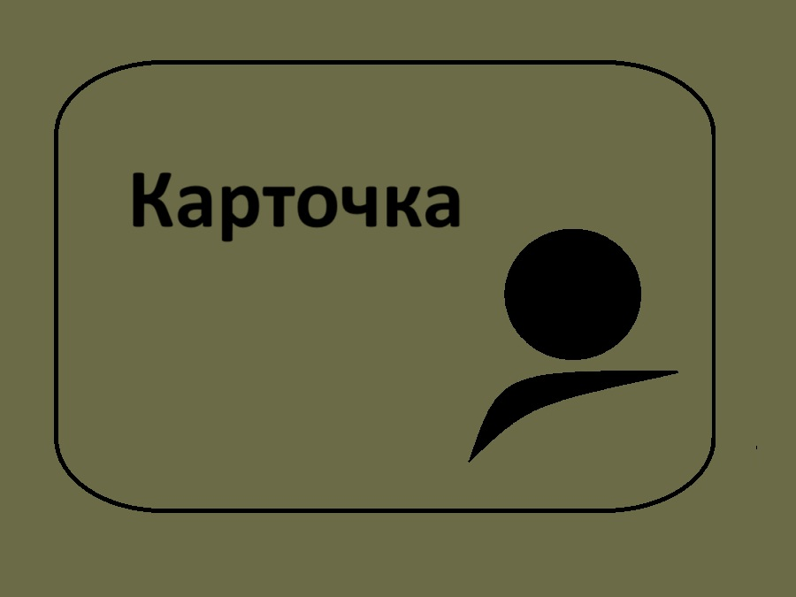

Домашняя страница
Выйти
Мои записи
Мои записи
{% for card in cards %}
{% if card %}
{% if card.image_url %}
{% endif %} 
{{ card.title }}
{{ card.subtitle }}
{% else %}
+ Создать новую карточку
{% endif %}
{% endfor %}
{% if pagination.has_prev %}
Предыдущая
{% endif %} {% for page in pagination.iter_pages() %} {% if page %} {% if page != pagination.page %}
{{ page }}
{% else %}
{{ page }}
{% endif %} {% else %} ... {% endif %} {% endfor %} {% if pagination.has_next %}
Следующая
{% endif %}